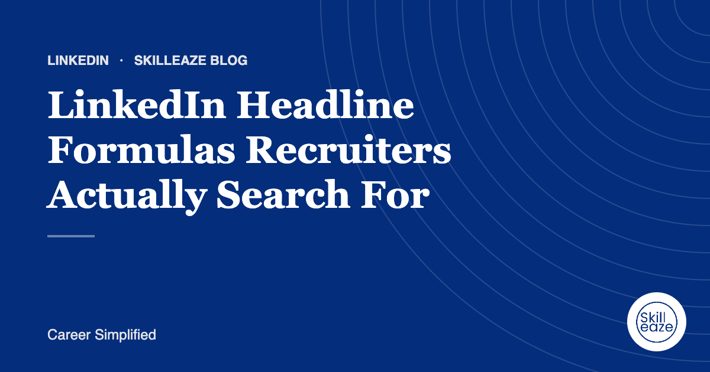

LinkedIn Headline Formulas Recruiters Actually Search For
Simple headline structures that make your profile easier to find and understand.

Why the headline matters
Your headline appears in search results, comments and connection requests. Recruiters use it to decide whether to click.
Formula 1: Role and specialism
Example: Data Analyst | SQL, Power BI | Retail and E-commerce. Clear, searchable and specific.
Our team writes your LinkedIn optimization from your real experience. INR 690 · AED 30 · USD 10 (50% off).
Formula 2: Role, outcome and market
Example: Sales Manager driving B2B growth across the GCC. Shows impact and location focus.
Formula 3: For job seekers
Example: Finance graduate | Financial modelling, Excel | Open to analyst roles in Dubai. Signals what you want.
Avoid
Vague titles, emojis, buzzwords like 'passionate' and 'guru', and headlines that only say 'Looking for opportunities'.
Frequently asked questions
How long can a LinkedIn headline be?
LinkedIn allows up to 220 characters, but only the first part shows in search results and comments. Put your role and main specialism at the start so the most important words are visible everywhere your name appears.
Should I write open to work in my headline?
You can, but it takes space away from words recruiters search for. Many people use the Open to Work feature, which can be shown to recruiters only, and keep the headline for role, skills and market.
How often should I update my headline?
Update it whenever your target role, specialism or location changes, and review it every few months while job hunting. Small changes, such as adding a key tool or target country, can make your profile appear in more relevant searches.
General guidance only. Employer requirements vary; always follow the job advert.
 Chat on WhatsApp
Chat on WhatsApp